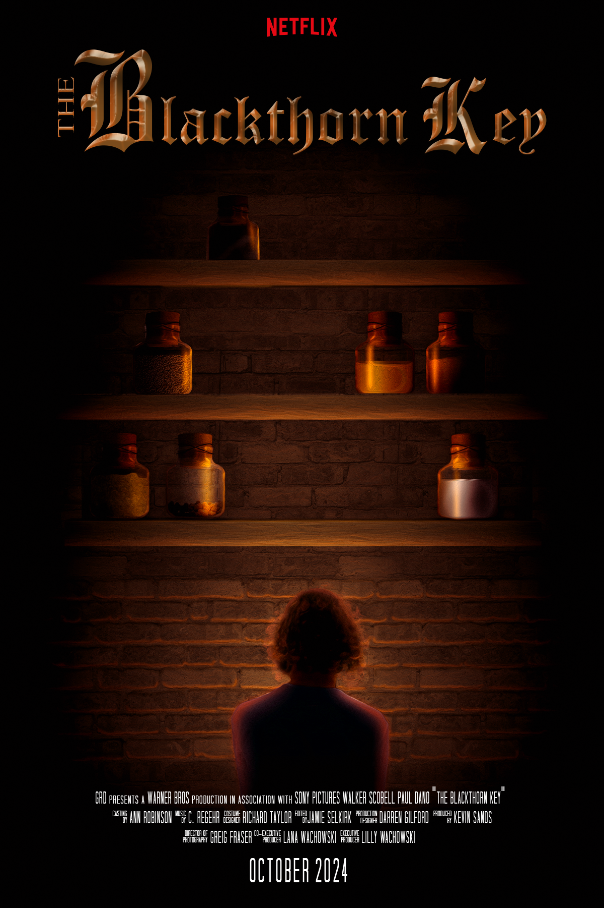

The Blackthorn Key is a young adult murder mystery novel by Kevin Sands. It takes place in 1665, following an apothecary’s apprentice trying to solve the murder of his master. It uses recipes and ingredients accurate to the time period such as quicksilver (mercury), madapple (Datura seeds), and oil of vitriol (acetic acid). Each of these - as well as other plot-relevant items - are included in this poster design, which displays a hypothetical Netflix adaptation of the novel.